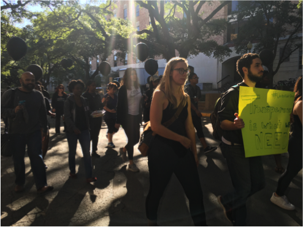
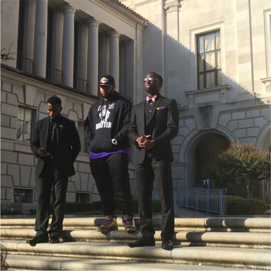
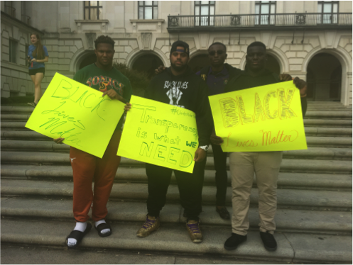

A swastika drawn in feces in a Southern college bathroom. Black students vastly underrepresented in most universities. Public protests, hunger strikes, and speeches made across the country. It’s not 1969. It’s 2015.
Racial tensions have erupted in past months at the University of Missouri after the president of the student body shared a tweet about being called the N-word. Since last year’s Ferguson protests, and the start of Black Lives Matter, students have been calling for more action from university administration.
Missouri President Tim Wolfe was asked to step down for the way he handled racial animosity within the student body, and resigned on Nov. 8.
The events that played out in Missouri brought racial tensions to the forefront in the minds of many black students at UT. On Nov. 20, UT students responded to protests at the University of Missouri with a show of unity at a Black March for Hope.
More people join the group as they reach Dean Keaton and start chanting.
The black fraternity Omega Psi Phi organized the march and over 30 people of diverse ethnicities were in attendance.
The group walked down Dean Keaton Street and Guadalupe Street chanting phrases such as “Education is our right not just for the rich and white” and “Transparency is what we need to build a black UT.”
At the end of the march the organizers stopped in front of the tower to speak about the various adversities facing black students ranging from scholarship fund decreases to the treatment of black students.
A few people speak in front of tower before concluding the protest.
Desmond Jackson, a former UT football player and recent graduate, attended the march because he felt that nothing has really changed since his first day at UT in 2011.
“I actually had someone tell me, my first day at UT, ‘You’re just going to be another n----- at this university,’” Jackson said. “I took it as an offense.”
People release black ballons at the end of the protest.
One of the major issues discussed at the march was the underrepresentation of black students at UT. The state of Texas consists of 12.5 percent African-Americans, but its flagship university is less than one third of that percentage. Students unified over this percentage and created the community hashtag #TheFourPercent.
Protest leaders hold posters infront of the Tower.
This underrepresentation is especially prominent in the Science Technology Engineering Mathematics (STEM) departments where there are less than 3 percent black tenured professors and about 6 percent black students.
Psychology and engineering Senior Emmanuel Akatugba feels the lack of black students in his field deeply, as he is the only black student in most of his classes.
“You don’t feel like you have any friends you can relate with. You’re forced to go to people who aren’t really on the same page as you,” said Akatugba.
He feels classmates are often reluctant to help out because they have a stereotypical assumption that he is going to fail. Akatugba says that it is difficult to get past the stereotype and reach out to somebody who doesn’t want to reach out to him.
“I do not feel appreciated being black on campus,” said Akatugba.
Kayla Williams, UT senior and black activist, along with other black activists met with president Gregory L. Fenves to discuss the issues of being black on campus. Williams said the conversation was result of a protest at the Texan Talks were a fellow activist stood up and continuously asked Fenves ‘Do black lives matter?’
According to The Daily Texan, at the meeting Fenves said, “What I’d like to get out of this meeting is a better understanding of the short-term and long-term actions needed here at the University.”
Williams says topics discussed were affordable housing, recruitment of black professors and students, hate crimes, hostility on campus and racist parties.
“The only classes I have felt confident enough to speak up in are my African Diaspora classes,” Williams said. “There is just so much hostility on campus and racist things do happen here.”
In 2012, bleach-filled water balloons were thrown at students on West Campus. In March 2015, a Border Patrol-themed party occurred at the fraternity known as Fiji and in Nov. 2015 students applied black face in a play. These are among the issues that minority students face at UT.
Sonica Reagins-Lilly, senior associate vice president for Student Affairs and Dean of Students told The Daily Texan in regards to the Border Patrol-themed party on March 2015, “Civility, diversity and citizenship are integrated into the fabric of the University of Texas at Austin, there is an ongoing work integrated in everything we do.”
Dr. Edmund T. Gordon, Associate Professor and Chair of the Department of African and African Diaspora Studies, says that university does try to diversify but there is still a long way to go. Gordon says when black students and professors do get to this university they do not want to rock the boat so they remain silent.
“There is no racial diversity, particularly in the high-ranked faculty and administration,” Gordon said. “In terms of the academic administration, I am the only black chair in the entire university.”
Gordon says that what happened in Missouri was powerful but something like that would not happened here because students do not feel like they have enough backing to actually do something about the racism they experience.
Karla Benitez is from McAllen, Texas and currently writes for the Austin Times. She attends the University fo Texas at Austin where she is majoring in Journalism and Film.